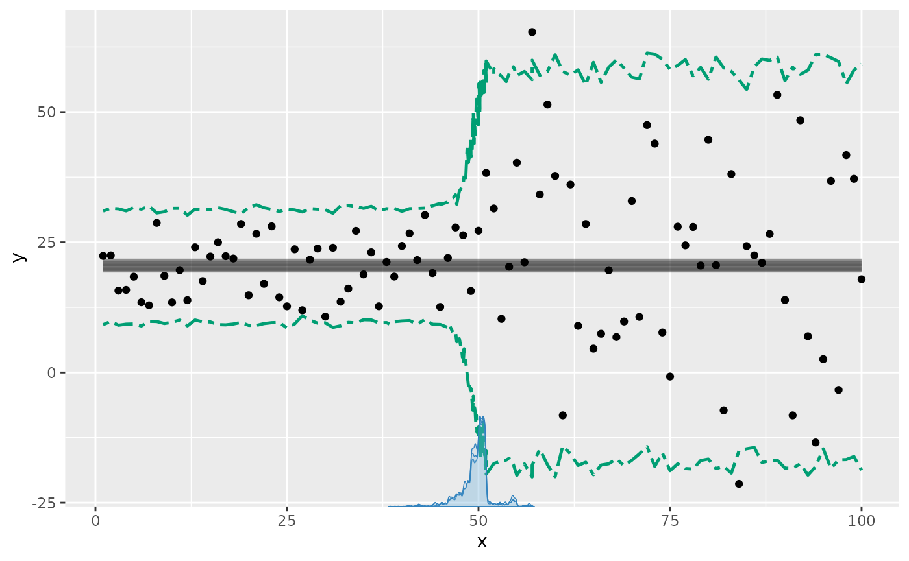
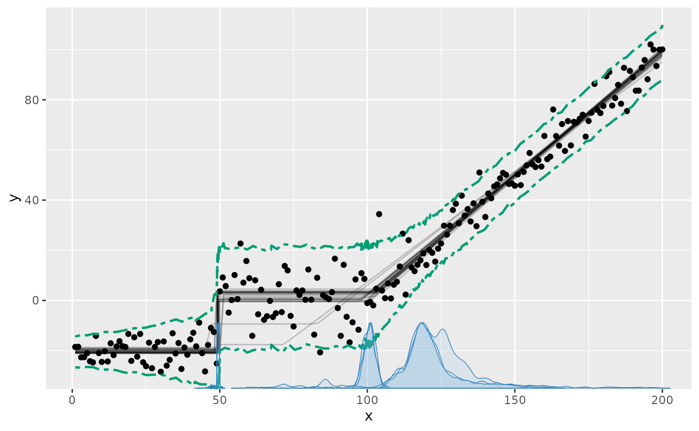
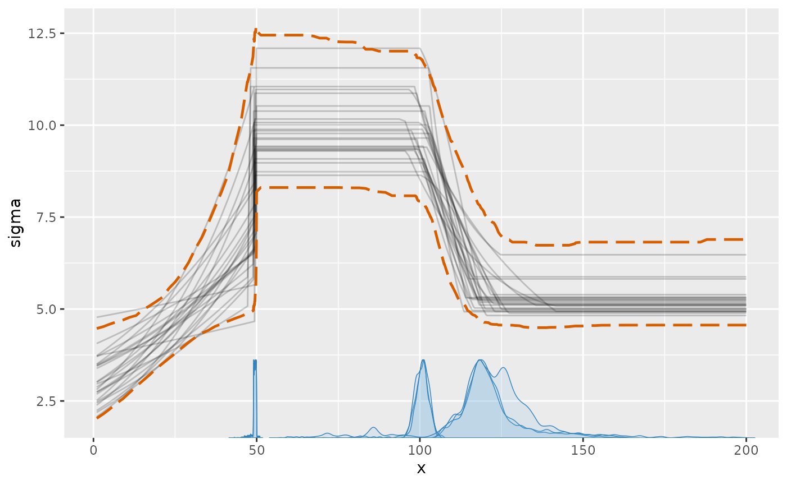
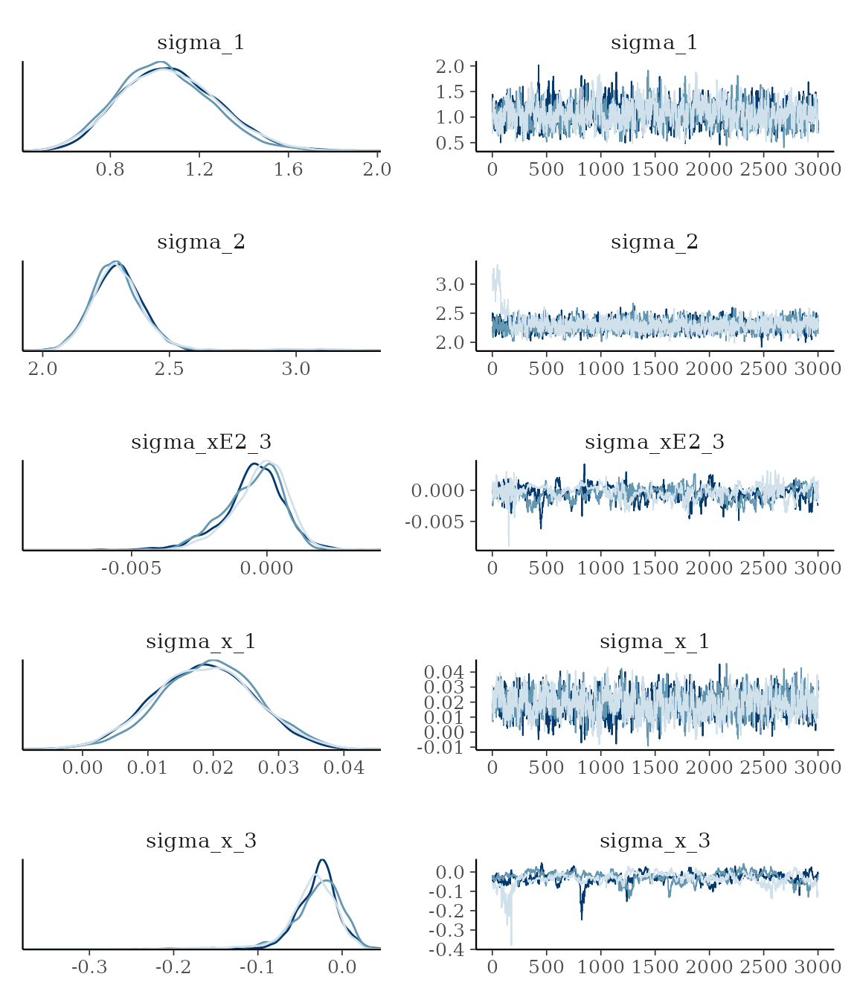
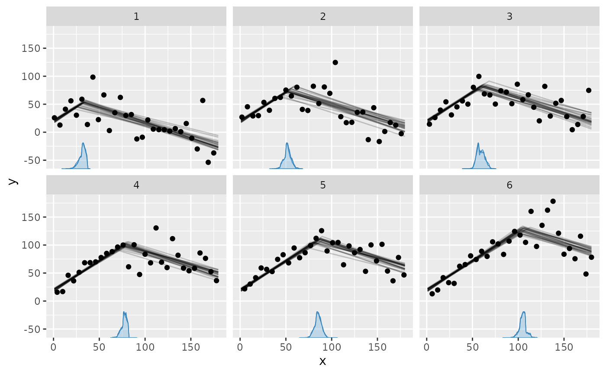

For GLM families with a variance parameter (sigma), you
can model this explicitly. For example, if you want a flat mean (a
plateau) with increasing variance, you can do
y ~ 1 + sigma(1 + x). An explicit sigma()
formula uses a log link, so its linear predictor is log-SD and
sigma = exp(eta_sigma), as in brms. This
guarantees a positive, smoothly varying SD. In general, all formula
syntax that is allowed outside of sigma() (where it applies
to the mean) also works inside it (applying to log-SD). For example, you
can do ~ 1 + sigma(1 + z + I(x^2)). Read more about mcp
formulas here.
There is one intentional distinction for the common model without any
sigma() term. Its implicit constant sigma_1 is
the residual SD itself, not log-SD, and its default response-scale
half-Student-t prior matches brms. As soon as any segment
contains an explicit sigma() term, all sigma_*
coefficients in that model are on the log-SD scale. Thus simulation
values use, for example, sigma_1 = log(5), while
fitted(fit, dpar = "sigma") still returns an SD of 5 on the
response scale.
Priors for sigma models
Without an explicit sigma() formula, the default is the
intercept-only prior
dt(0, max(2.5, round(mad(y), 1)), 3) T(0, ) directly on the
residual SD. The response-calibrated scale adapts to the units of
y, with a minimum of 2.5 to avoid an accidentally narrow
prior. This matches brms.
With an explicit sigma() formula, the intercept instead
defaults to dt(0, 2.5, 3) on log-SD, with scaled Student-t
coefficient priors. brms uses the same log-SD
parameterization and intercept prior but flat coefficients; the proper
mcp defaults support prior sampling and mildly regularize
short segments.
library(mcp)
future::plan(future::multisession, workers = 3)
set.seed(42) # Make the script deterministicSimple example: a change in variance
Let us model a simple change in variance on a plateau model. First, we specify the model:
model = list(
y ~ 1, # sigma(1) is implicit in the first segment
~ 0 + sigma(1) # a new intercept on sigma, but not on the mean
)We can simulate some data, starting with low variance and an abrupt change to a high variance at :
set.seed(40)
df = data.frame(x = 1:100, y = 1)
empty = mcp(model, data = df, sample = FALSE, par_x = "x")
df$y = empty$simulate(
empty, df,
cp_1 = 50, Intercept_1 = 20,
sigma_1 = log(5), sigma_2 = log(20))
head(df)## x y
## 1 1 22.38870
## 2 2 22.48091
## 3 3 15.70208
## 4 4 15.85470
## 5 5 18.39213
## 6 6 13.48115Now we fit the model to the simulated data.
fit = mcp(model, data = df, par_x = "x")We plot the results with the prediction interval to show the effect of the variance, since it won’t be immediately obvious on the default plot of the fitted mean predictions:
plot(fit, q_predict = TRUE)
We can see all parameters are well recovered (compare
sim to mean). Like the other parameters, the
sigmas are named after the segment where they were
instantiated. There will always be a sigma_1.
summary(fit)## Family: gaussian(link = 'identity')
## Iterations: 9000 from 3 chains.
## Segments:
## 1: y ~ 1
## 2: y ~ 1 ~ 0 + sigma(1)
##
## Population-level parameters:
## name match sim mean lower upper Rhat ess_bulk ess_tail
## cp_1 OK 50.0 49.7 45.3 54.4 1 1681 980
## Intercept_1 OK 20.0 20.3 18.9 21.9 1 4743 5078
## sigma_1 OK 1.6 1.7 1.5 1.9 1 3798 4324
## sigma_2 OK 3.0 2.9 2.8 3.2 1 4985 4383Advanced example
We can model changes in sigma alone or in combination
with changes in the mean. In the following, I define a needlessly
complex model, just to demonstrate the flexibility of modeling
variance:
model = list(
# Increasing variance.
y ~ 1 + sigma(1 + x),
# Abrupt change in mean and variance.
~ 1 + sigma(1),
# Joined slope on mean. variance changes as 2nd order poly.
~ 0 + x + sigma(0 + x + I(x^2)),
# Continue slope on mean, but plateau variance (no sigma() tern).
~ 0 + x
)
# The slope in segment 4 is just a continuation of
# the slope in segment 3, as if there was no change point.
prior = list(
x_4 = "x_3"
)Notice a few things here:
- Segment 3 and 4: I changed the variance on a continuous slope. You can do this using priors to define that the slope is shared between segment 3 and 4, effectively canceling the change point on the mean (more about using priors in mcp here).
- Segment 4: By not specifying
sigma(), segment 4 (and later segments) just inherits the variance from the state it was left in in the previous segment.
In general, the log-SD parameters are named
sigma_[normalname], where “normalname” is the usual
parameter names in mcp (see more here). For example, the log-SD
slope on x in segment 3 is sigma_x_3. However,
sigma_int_i is just too verbose, so log-SD intercepts are
simply called sigma_i, where i is the segment number.
Simulate data
We simulate some data from this model, setting all parameters. As
always, we can fit an empty model to get fit$simulate,
which is useful for simulation and predictions from this model.
set.seed(40)
df = data.frame(x = 1:200, y = 1)
empty = mcp(model, data = df, sample = FALSE)
df$y = empty$simulate(
empty, df,
cp_1 = 50, cp_2 = 100, cp_3 = 150,
Intercept_1 = -20, Intercept_2 = 0,
sigma_1 = log(3), sigma_x_1 = log(2) / 50,
sigma_2 = log(10),
sigma_x_3 = -0.03,
sigma_xE2_3 = 0.0003,
x_3 = 1, x_4 = 1)Fit it and inspect results
Fit it in parallel, to speed things up:
fit = mcp(model, data = df, prior = prior)Plotting the prediction interval is an intuitive way to to see how the variance is estimated:
plot(fit, q_predict = TRUE)
We can also plot the sigma_ parameters directly. Now the
y-axis is sigma:
plot_dpar(fit, dpar = "sigma", q_fit = TRUE)
summary() show that the parameters are well recovered
(compare sim to mean). The last change point
is estimated with greater uncertainty than the others. This is expected,
given that the only “signal” of this change point is a stop in variance
growth.
summary(fit)## Family: gaussian(link = 'identity')
## Iterations: 9000 from 3 chains.
## Segments:
## 1: y ~ 1 + sigma(1 + x)
## 2: y ~ 1 ~ 1 + sigma(1)
## 3: y ~ 1 ~ 0 + x + sigma(0 + x + I(x^2))
## 4: y ~ 1 ~ 0 + x
##
## Population-level parameters:
## name match sim mean lower upper Rhat ess_bulk ess_tail
## cp_1 OK 50.0000 4.9e+01 47.4374 49.9902 1 2686 732
## cp_2 OK 100.0000 1.0e+02 95.4941 104.4704 1 110 73
## cp_3 OK 150.0000 1.2e+02 106.0298 153.3169 1 105 61
## Intercept_1 OK -20.0000 -2.0e+01 -21.3501 -18.8573 1 4496 4331
## Intercept_2 OK 0.0000 1.2e+00 -2.0572 4.1454 1 149 106
## x_3 OK 1.0000 9.8e-01 0.9276 1.0239 1 197 69
## x_4 OK 1.0000 9.8e-01 0.9276 1.0239 1 197 69
## sigma_1 OK 1.0986 1.1e+00 0.6679 1.5128 1 786 1625
## sigma_x_1 OK 0.0139 1.9e-02 0.0038 0.0338 1 785 1544
## sigma_2 OK 2.3026 2.3e+00 2.1105 2.5175 1 410 196
## sigma_x_3 OK -0.0300 -3.1e-02 -0.0989 0.0150 1 71 145
## sigma_xE2_3 OK 0.0003 -4.1e-04 -0.0028 0.0014 1 128 549
##
## Warning: 8 parameters show poor convergence (Rhat > 1.01 or ESS < 400).The bulk and tail effective sample sizes (ess_bulk and
ess_tail) are fairly low, indicating poor mixing for these
parameters. Rhat is acceptable at < 1.1, indicating good
convergence between chains. Let us verify this by taking a look at the
posteriors and trace. For now, we just look at the sigmas:
plot_pars(fit, regex_pars = "sigma_")
This confirms the impression from Rhat,
ess_bulk, and ess_tail. Setting
mcp(..., iter = 10000) would be advisable to increase the
effective sample size. Read more about tips, tricks, and debugging.
Varying change points and variance
The variance model applies to varying change points as well. For
example, here we do a spin on the example in the article on varying change
points, and add a by-person change in sigma. We model
two joined slopes, varying by id. The second slope is also
characterized by a different variance. This means that the model has
more information about when the change point occurs, so it should be
easier to estimate (require fewer data).
model = list(
# intercept + slope
y ~ 1 + x,
# joined slope and increase in variance, varying by id.
1 + (1|id) ~ 0 + x + sigma(1)
)Simulate data:
set.seed(40)
df = data.frame(
x = 1:180,
id = rep(1:6, times = 30),
y = 1
)
empty = mcp(model, data = df, sample = FALSE)
df$y = empty$simulate(
empty, df,
cp_1 = 70, cp_1_id = 15 * (df$id - mean(df$id)),
Intercept_1 = 20, x_1 = 1, x_2 = -0.5,
sigma_1 = log(10), sigma_2 = log(25))Fit it:
fit = mcp(model, data = df)Plot it:
plot(fit, facet_by = "id")
As usual, we can get the individual change points:
mcp::ranef(fit)## name match sim mean lower upper Rhat ess_bulk
## 1 cp_1_id[1] OK -37.5 -36.861842 -43.484306 -31.837629 1.0006511 2366
## 2 cp_1_id[2] OK -22.5 -16.478416 -22.724391 -10.099772 1.0010508 3321
## 3 cp_1_id[3] OK -7.5 -9.318467 -15.411391 -2.478497 1.0004821 2862
## 4 cp_1_id[4] OK 7.5 8.944336 3.160782 13.849711 0.9999834 3366
## 5 cp_1_id[5] OK 22.5 16.933810 10.480374 23.147013 1.0010938 3775
## 6 cp_1_id[6] OK 37.5 36.780578 30.254391 43.756603 1.0020069 1849
## ess_tail
## 1 3337
## 2 4591
## 3 5416
## 4 4590
## 5 4396
## 6 3162